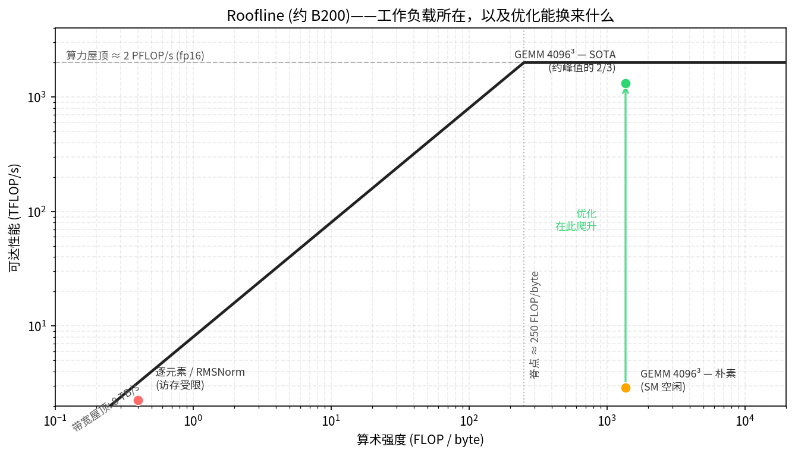

What Makes a Kernel Fast#
Overview
The roofline model gives a kernel a performance ceiling. The ceiling is set by either memory bandwidth or compute throughput.
Arithmetic intensity decides which ceiling applies. It is the amount of useful arithmetic work done per byte moved.
Low arithmetic intensity means the kernel is memory-bound. The main ways out are to move fewer bytes, reuse data more, fuse operations, or use smaller dtypes.
High arithmetic intensity means the kernel can be compute-bound. The main task is then to keep the Tensor Cores busy.
In modern GPU kernels, the main lever is overlap. TMA, Tensor Cores, epilogues, and stores should run at the same time whenever the dependency graph allows it.
A kernel is only fast relative to a ceiling. A number like 330 TFLOP/s may look large by itself, but it means something very different on a GPU that can sustain on the order of 2 PFLOP/s on dense fp16 or bf16 Tensor Core work. Without a ceiling, it is hard to tell whether a kernel is close to the hardware limit or still leaving most of the chip idle.
The roofline model gives that ceiling. It separates the kernel into two basic activities: moving bytes and doing arithmetic. If the kernel cannot move data fast enough, memory bandwidth sets the limit. If the kernel has enough data reuse and enough arithmetic work, compute throughput sets the limit.
The numbers in this chapter use the NVIDIA B200 as the running example. Following the convention from GPU Execution Model, we use round ceilings for reasoning: roughly 2 PFLOP/s of dense fp16 or bf16 Tensor Core throughput, and roughly 8 TB/s of HBM3e bandwidth. The exact values depend on the specific device, clock, power limit, and measurement setup, so they should be read as order-of-magnitude limits rather than datasheet constants.
The Roofline Model#
Every kernel moves data and does arithmetic. The roofline model bounds the kernel by the slower of those two paths.
The compute ceiling is the maximum arithmetic throughput of the hardware. For a Tensor Core GEMM on B200, the relevant ceiling is the Tensor Core throughput. For a scalar or elementwise kernel, the relevant ceiling may instead be CUDA core throughput or another functional unit.
The memory ceiling is bandwidth multiplied by arithmetic intensity. If a kernel does little arithmetic for each byte moved, memory bandwidth limits performance. If it does many operations per byte, memory is less likely to be the limiting factor.
The basic roofline bound is:
attainable FLOP/s <= min(peak FLOP/s, memory bandwidth * arithmetic intensity)
Arithmetic intensity is:
arithmetic intensity = useful FLOPs / bytes moved
The memory level must be specified. For an HBM roofline, the bytes are HBM bytes. For an L2 roofline, they are L2 bytes. For an SMEM roofline, they are shared memory bytes. In this chapter, the default roofline is the HBM roofline.
On a roofline plot, the x axis is arithmetic intensity, measured in FLOP per byte. The y axis is attainable performance. The memory roof is a sloped line:
performance = bandwidth * arithmetic intensity
The compute roof is a flat line:
performance = peak FLOP/s
The two meet at the ridge point:
ridge point = peak FLOP/s / bandwidth
For the B200 round numbers used here:
ridge point ≈ 2000 TFLOP/s / 8 TB/s
≈ 250 FLOP/byte
A kernel below that arithmetic intensity is memory-bound under the HBM roofline. It cannot reach peak Tensor Core throughput because it cannot deliver enough bytes per second to feed that much arithmetic.
A kernel above that arithmetic intensity can be compute-bound. At that point, memory traffic is no longer the first-order limit. The remaining job is to drive the compute units well enough to approach the flat roof.
The useful part of the roofline model is not the plot itself. The useful part is that it tells the programmer which resource is binding. A memory-bound kernel does not become fast because its math instructions are slightly better. A compute-bound kernel does not become fast because it saves a few irrelevant bytes. The first step is to know which side of the ridge the kernel is on.

Arithmetic Intensity of Common Workloads#
Arithmetic intensity is often an algorithm property before it is an implementation detail. A rough estimate can usually be made before writing the kernel.
Elementwise and Reductions#
Elementwise kernels, such as GELU, and reduction-style kernels, such as RMSNorm, read and write large tensors while doing only a small number of FLOPs per element.
Their arithmetic intensity is low. They sit far to the left of the ridge point. The best version of such a kernel usually tries to approach the memory bandwidth roof, not the Tensor Core compute roof.
For these kernels, the important questions are mechanical:
Are the loads and stores coalesced?
Are bytes moved only once?
Can the operation be fused with a producer or consumer?
Can the dtype be smaller?
Can TMA or vectorized accesses help?
If there is no reuse and no fusion opportunity, the memory roof is the real ceiling.
GEMM#
GEMM is the opposite case. Its arithmetic intensity grows with problem size because each loaded tile can be reused for many multiply-accumulate operations.
For a square fp16 matmul with M = N = K, the ideal arithmetic intensity is approximately:
AI ≈ 2N^3 / (3 * 2N^2)
= N / 3 FLOP/byte
This estimate assumes A and B are read once, C is written once, beta is zero, on-chip reuse is perfect, and there is no extra metadata, padding, or redundant traffic. Real kernels move more data than this ideal model. But the estimate is still useful.
At N = 4096:
AI ≈ 4096 / 3
≈ 1365 FLOP/byte
That is well to the right of the B200 ridge point of roughly 250 FLOP/byte. Large GEMM is therefore compute-bound under the HBM roofline. The goal is not merely to reduce HBM traffic. The goal is to use Tensor Cores, keep them fed, and overlap data movement with compute so the compute roof becomes reachable.
This is why a naive GEMM can be slow even though GEMM has high arithmetic intensity. The algorithm permits high performance, but the implementation may leave the Tensor Cores idle.
Attention#
Attention sits between these extremes. Its arithmetic intensity depends on sequence length, head dimension, tiling, masking, and whether intermediate tensors are materialized.
The key problem in standard attention is the score matrix. If the kernel writes the score matrix to HBM and later reads it back, it moves a large intermediate through memory. Flash Attention (Flash Attention 4) raises arithmetic intensity by keeping the relevant tiles on chip and avoiding that HBM round trip.
So attention optimization is partly a roofline problem and partly a scheduling problem. The algorithm is changed so that fewer bytes go to HBM. Then the kernel is scheduled so that the remaining movement and compute overlap.
When Arithmetic Intensity Is Low#
If a kernel is left of the ridge, it is memory-bound. The Tensor Cores or CUDA cores may be idle because the bottleneck is bytes, not arithmetic instructions.
There are two responses.
The first response is to raise arithmetic intensity. This is the higher-leverage path because it can move the kernel toward the compute-bound region.
The most important technique is fusion. A common source of low arithmetic intensity is writing an intermediate tensor to HBM and reading it back immediately in the next operation. Fusing the producer and consumer keeps that intermediate in registers, SMEM, or TMEM. The HBM round trip disappears.
Examples include:
GEMM plus elementwise epilogue
normalization folded into a neighboring op
attention computed without materializing the full score matrix
The second technique is blocking for reuse. If a tile is loaded once and used many times before eviction, each byte supports more arithmetic work. GEMM gets its high arithmetic intensity from exactly this reuse. Other workloads can use the same idea whenever they have repeated use of a tile.
The third technique is reducing the number of bytes per value. Moving from fp32 to fp16, fp8, or fp4 reduces traffic and increases FLOPs per byte. The real gain is smaller than the raw dtype ratio when the format needs metadata, scale factors, or extra conversion work. Block-scaled fp8 and fp4 are examples of this. Even so, smaller dtypes are often one of the most direct ways to move a kernel rightward on the roofline.
The second response is to accept the memory roof and try to reach it. Some kernels do not have enough work to fuse or enough reuse to exploit. A pure copy, a simple elementwise operation, or a single-pass reduction over a large tensor may be fundamentally memory-bound.
In that case, the goal is not to beat the roof. The goal is to saturate it.
That means:
move each byte once
avoid redundant reads
use coalesced or vectorized accesses
use TMA for regular bulk tiles
keep enough memory requests in flight
use smaller storage dtypes when the algorithm allows it
Once a memory-bound kernel reaches the memory roof, further compute optimization does not help. The only way to go faster is to change the algorithm so it moves fewer bytes.
The Optimization Ladder#
The roofline says what is possible. It does not say how easy it is to reach that limit.
A large fp16 GEMM may be compute-bound in theory. That only means the HBM roof is not the main limit. It does not mean any implementation will reach the Tensor Core roof. Closing the gap requires the right instructions, layouts, staging, synchronization, and scheduling.
The GEMM kernels in Part III show this as a sequence of steps on B200 (Scaling GEMM with Warp Specialization and Clusters). Each step keeps the same basic algorithm but changes how the tile is computed or scheduled.
The first large measured jump in the GEMM ladder is the move from the thread-copy tiled path to the TMA-backed path. TMA takes regular GMEM -> SMEM tile movement off the CTA threads and lets the kernel feed Tensor Cores through hardware-managed bulk copies.
After that first jump, the main improvements come from overlap and scheduling. TMA brings future tiles into shared memory. tcgen05.mma runs asynchronously. The epilogue drains previous results. Software pipelining and warp specialization arrange those pieces so that the hardware engines are active at the same time.
There is also no rule that every intermediate step must be faster by itself. A step such as warp specialization may temporarily spend resources on a structure that does not immediately improve the number. It can still be the right step if it enables later overlap that the simpler structure could not express.

Overlap Is the Main Lever#
Once a GEMM is compute-bound and already uses Tensor Cores, the remaining gap usually comes from idle time.
A simple kernel might do this:
load tile k
compute tile k
store tile k
load tile k + 1
compute tile k + 1
store tile k + 1
That schedule leaves hardware idle. While the load runs, the Tensor Core waits. While the Tensor Core runs, the copy engine may be idle. While the store drains, both may be waiting.
A pipelined kernel instead tries to run independent stages together:
load tile k + 1
compute tile k
store tile k - 1
This is the central idea behind the Blackwell kernel structure used later in the book. TMA handles asynchronous data movement. tcgen05.mma handles asynchronous Tensor Core work. The epilogue and stores handle the output side. mbarrier objects connect the stages so that each consumer waits only when the data it needs is actually required.
The point is not to remove dependencies. The point is to schedule around them. The MMA for tile k cannot start until tile k is loaded. The epilogue for tile k cannot read the accumulator until the MMA for tile k is complete. But the load for tile k + 1 can often run while the MMA for tile k is in flight, and the store for tile k - 1 can often drain at the same time.
This is why so many later chapters focus on asynchronous mechanisms:
TMA for global memory to shared memory movement
mbarriers for load completion and resource handoff
tcgen05 for asynchronous Tensor Core compute
TMEM for long-lived accumulators
warp specialization to separate producer and consumer roles
clusters for larger cooperative tiles and multicast
They are different mechanisms, but they serve the same scheduling goal: keep useful work running on more than one hardware path at once.
Occupancy and Resource Pressure#
Overlap is not the only latency-hiding mechanism. The older and more general mechanism is occupancy.
Occupancy is the amount of work resident on an SM. If one warp stalls, the scheduler can run another warp that is ready. This hides latency by keeping a pool of independent warps available.
Occupancy is limited by per-SM resources. The main limits are registers, shared memory, warp slots, and CTA slots. A kernel that uses many registers per thread or a large amount of shared memory per CTA may have low occupancy because only a small number of CTAs or warps can fit on the SM.
Many modern Tensor Core kernels intentionally spend resources in ways that reduce occupancy. Multi-stage shared memory pipelines consume SMEM. Large register fragments consume registers. TMEM allocations consume Tensor Memory capacity. Warp specialization may reserve whole warps for producer or consumer roles.
The trade is deliberate. Instead of hiding latency by having many unrelated warps resident, these kernels hide latency through explicit overlap inside a smaller number of resident CTAs. A low-occupancy kernel can still be fast if its pipeline keeps TMA, Tensor Cores, and stores busy.
Neither approach is universally better. Some kernels need high occupancy because they have irregular memory access or limited explicit overlap. Others need deep staging and specialization because that is the only way to feed the Tensor Core efficiently. The right question is not whether occupancy is high. The right question is whether the active hardware units are kept busy.
What This Buys Later#
The rest of the book keeps returning to the same diagnosis:
Which roof is this kernel under?
What resource is binding?
What change moves the kernel closer to that roof?
For memory-bound kernels, the answer is usually fewer bytes and better bandwidth use. That means fusion, coalescing, vectorized accesses, TMA where applicable, and smaller dtypes.
For compute-bound GEMM, the answer is Tensor Cores first, then overlap. The kernel has to stage operands, issue asynchronous MMA work, keep the pipeline full, and drain the result without stalling the compute path.
For Flash Attention, the first move is to raise arithmetic intensity by keeping the score and probability tiles on chip. After that, it uses the same overlap tools as GEMM: tiled data movement, shared memory staging, asynchronous compute, and careful resource handoff.
This gives a practical workflow for optimization. Estimate arithmetic intensity. Locate the roof. Decide whether the kernel is memory-bound or compute-bound. Then optimize the resource that actually sets the ceiling.
Without that step, kernel optimization becomes guesswork. With it, each change has a reason: either it raises arithmetic intensity, moves the memory path closer to bandwidth peak, or reduces idle time under the compute roof.